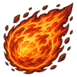
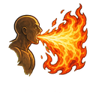
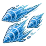
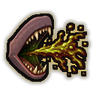
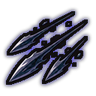

Home › Fighting › Visual effects
Visual effects
How techniques look in NFRP World: crisp painted shapes, constructs, mouth casting, taijutsu moves and the small touches around them. Every part is cosmetic: none of it changes damage, timing, areas or targeting, and each has its own switch in Mod settings > NFRP World.
How techniques look: one crisp painted style, constructs, mouth casting, taijutsu choreography, signature looks and many small touches. All of it is cosmetic and has its own switch in the mod settings.
The crisp style
All of NFRP World's effects are painted in one style: bold flat shapes with a thin dark outline, solid colour and crisp edges, the same way pawns and items are drawn.
- Projectiles fly as the shape of their element: a spear or bolt for shots and arrows, a crescent for slashes, blades and waves.
- Waves and lines sweep a wall of their element along the line.
- Beams and breaths charge first (shards fly into the hand and an orb grows), then hold a thick flowing beam for about a second before it thins and fades.
- Hits burst in the element's shape and leave a mark on the ground (scorch, puddle, frost, cracks, roots, sand) that fades.
- Every animated effect (bursts, slashes, pillars, rings, swirls, splashes, healing blooms, seal circles and the rest) has been repainted in this style with the same motion as before.
- Particles (embers, flames, leaves, petals, sparks, drops, rings, auras, lightning bolts) are crisp too.
- Glow is capped: overlapping lights never blow out to white, and colours stay the element's colour. A slider sets glow strength.
- Particle budget: one technique use shows a limited number of particles (30 by default), as fewer and larger pieces.
Constructs
About 110 techniques build something you can see, in their own material: sand, earth, water, ice, wood, crystal, bone, bugs, paper, ink, shadow, chakra, smoke, webbing, lightning or fire. Constructs grow slightly past full size and settle, hold while the technique lasts, then crumble.
- Beasts: A head leads a flowing, swaying body from the caster to the target, then bursts. Examples: Violent Water Dragon, Karyuudan: Fire Dragon Missile, Raiton: Lightning Dragon Missile, Earth Dragon Blast, Rising Wooden Dragon, Hitoshirezu Mushiryūdan: Hidden Bug Dragon, Enryū: Smoke Dragon, King-Sized Rainbow Dragon, C2 Dragon, Devastating Ice Tiger, Roar of the Wind Tiger, Kagejū (Shadow Beast).
- Giant hands: A giant hand rises and grabs or slams; some stay as a fist beside the caster. Examples: Desert Hand Pillar, Kujabaima: Giant's Arm, Bubun Baika: Partial Expansion, Chōbaika: Mega Palm Thrust, Tsume no Shingai: Claw of Terror, Bone's Vengeful Grasp, Suna Kanadzuchi (Sand Hammer), Golem Stone Prayer.
- Walls: Walls rise out of the ground around the barrier. Examples: Wall of Earth, Wall of Water, Wall of Wood, Ice Rampart, Great Wall of Sand, Lightning Wall, Fire Style: Fire Barrier, Gale Barrier, Shōton: Crystal Wall, Mushikabe: Bug Wall, Samekabe: Shark Wall, Chocolate Rashōmon, Shield Wall.
- Domes: A dome grows over the area. Examples: Vine Dome, Shadow Dome, Kichigai Oto Yokoana: Vicious Sound Dome, Seijaku no Maru (Silence Dome), Domu no Kishinryuu: Storm Dome, Wall of Webbing, Shield of Force.
- Prisons: A shell or cage closes around the caught target and holds while it is held. Examples: Water Prison, Ice Prison, Shōton: Crystal Prison, Sabaku Kyuu: Sand Coffin, Bedrock Coffin, Four-Pillar Prison, Bone Cage, Rairō (Lightning Cage), Spider Cocoon, Tree Tomb.
- Spikes: Spikes or trees burst up under the target or across the area. Examples: Shifting Sand Spikes, Earth Caltrops, Ground Spike, Groundspike Graveyard, Dance of the Seedling Ferns, Kami Gosunkugi: Paper Spike, Great Spear Tree, Spontaneous Tree.
- Binds: Vines, chains, ropes or webbing reach from the caster or ground to the target. Examples: Entangle, Silent Vine Strangulation, Kusari Fūin (Seal of chains), Soul Chains, Kami Kusari: Chain Letter, Kinawa Shibari (Chakra Rope Binding).
- Coatings: A layer of the material covers the body while the armour lasts. Examples: Suna no Yoroi: Sand Armour, Water Armour, Frost Armour, Armour of Lightning, Kesshō no Yoroi: Crystal Armour, Bone Armour, Bark Armour, Yoroi no Kami: Armour of Paper, Yoroi no Mushi: Armour of Bugs, Armour of the Mountains.
Iron sand
The Masamune clan's iron sand has its own constructs:  Polarity Power: Attract floats two giant sand hands beside the caster on crackling magnetic tethers, and one sweeps out, grabs and drags the target back.
Polarity Power: Attract floats two giant sand hands beside the caster on crackling magnetic tethers, and one sweeps out, grabs and drags the target back.  Embodied Bulwark settles sand walls around the caster and coats the body in flaking sand;
Embodied Bulwark settles sand walls around the caster and coats the body in flaking sand;  Armament Orbit circles orbs and needles around the caster;
Armament Orbit circles orbs and needles around the caster;  Slaying Spire bursts a spike up under the target;
Slaying Spire bursts a spike up under the target;  Monolith: Grinding Prism forms a block over the target that grinds and crumbles;
Monolith: Grinding Prism forms a block over the target that grinds and crumbles;  Monolith: Black Drizzle rains needles over the area;
Monolith: Black Drizzle rains needles over the area;  Monolith: Satetsu World Method spreads a huge pool with spires;
Monolith: Satetsu World Method spreads a huge pool with spires;  Rail Gun fires a slug with a tether flash. Everything crumbles back into sand.
Rail Gun fires a slug with a tether flash. Everything crumbles back into sand.
Mouth casting
Breath, spit and fireball techniques come out of the mouth: one hand rises to the lips (or both hands in front of the mouth), the stream starts thin, thickens, holds and thins out, then the hand drops. About 24 of NFRP World's techniques count, among them

Katon: Great Fireball,
Fire Style: Fire Spray,
Drilling Water Bullet,
Spit Poison,
Ninpō: Ink Sniping andTaijutsu
Close-range techniques are choreographed:
- Dash: the attacker crosses the gap in a blink, leaving afterimages, and steps back after.
- Strings: punch and palm techniques land four quick alternating jabs, the last one hardest.
- Throws: grab, lift, swing over the head and slam down on the far side with dust and a knockdown.
- Launches: kicks and rising strikes throw the target up; it spins and lands flat.
Channels and weapon poses
Long casts are channelled: coloured motes orbit the caster and grow in number, then collapse into the weapon's tip, which flares, and the weapon swings on release. A staff, spear or sword takes a pose of its own per technique: planted upright beside the caster, raised in one hand, held upright, held level as a guard, or pointed at the target. Afterwards the weapon rests on the shoulder for a moment.
Hand signs
See Hand signs.
Fights and teams
- Pincer strikes: two allies hitting one foe from opposite sides at the same moment land a joint strike with one shared flash, "Pincer!", and a knockdown or big stagger. An ally joining a fight dashes in.
- Big combos: when two allies' elements combine into an elemental combo, it shows as one big effect the size of the combo: a fire vortex for fire and wind, an electrified pool for water and lightning, a mud surge for earth and water, and so on.
- Callouts: a ninja shouts the technique as it casts ("Fire Release!" and then the technique's name); quick chains stack. Your ninja only, everyone, or off.
- XP pop-ups: small yellow text over your ninja when they gain class XP, such as "+27 XP (Combat)", "(Kill)" or "(Training)". Gains close together merge.
Signature looks
About 35 of the biggest S-rank techniques have a look of their own (Signature technique looks). Each plays in three beats:
- Wind-up: a seal circle in the clan's colour grows under the caster and flashes once per hand seal, with an aura ring around them.
- Release: its own combination of shapes, timed to land with the technique: a beast head, a dome, a ring of walls, spear rain, rising spikes, crescents, rays or bolts.
- Aftermath: a mark left on the ground, falling embers, petals, shards, leaves, drops or sparks, and a brief screen tint.
They cover the Kazeraikou storm arts (created by Marii from NFRP), the Eighth Gate and the gate finishers, the legendary weapon finals, the great elemental techniques (Tsunami, Typhoon, Judgment Bolt, Crashing Meteor, Iceberg, Tree Tomb and more) and every clan's top technique. With the finisher camera on, they get a short slow-down too.
Effects that match the name
With Effects match technique names on, a technique's colours and particles follow its name and description: Shidensen (Purple Lightning Flash) cuts with purple lightning and purple sparks, Sakura Tsuisutā (Sakura Twister) swirls pink petals, Crimson Fireball burns red, ink techniques splash black ink, Silver Moon Dance throws silver crescents and Lightning Leaf Storm drops sparks and leaves. More than 450 techniques changed look. Turn it off for the element colours alone.
Weapon arts
Weapon techniques move the weapon (Weapon art choreography): draw cuts, flash dashes through the target, flurries, rising arcs and thrusts, with the weapon swinging through each move.
Defensive moments
- Blocks and parries: sparks at the point of contact, a flash on the weapon or shield, and both fighters pushed back a little. Armour deflections and shield belts spark too.
- Dodges: a quick side-step with two afterimages and a whoosh; ranged shots that only just miss get a side-step too.
- Substitution: the hit lands, a burst of smoke, the log drops in place, and the ninja reappears nearby in a puff, trailing afterimages.
- Barriers: a shot hitting a barrier or a technique wall sends out ripples and cracks.
Finishing blows, life and weather
- Finishing blow moments: an impact ring, a flash and a burst when a strong technique or a heavy hit kills or downs. Finishing blow slow motion and the Finisher camera (a short zoom on S-rank finishers) are off by default.
- Hit-stop: heavy and finishing hits hold attacker and target still for a few frames.
- Ambient ninja life: ninja practise hand signs while idle, sparring throws sparks, a soft glow shows at night and meditation raises motes.
- Weather interplay: steam in the rain, bigger lightning in storms, puddles, frost and wind gusts.
Lasting effects form and fade
- Storm zones show their area as it forms: a streak runs from the caster, the footprint blooms outward with pieces of its element, and the zone fades out when it ends instead of vanishing.
- Barriers rise out of the ground with a glowing rim and crumble away when they end.
- Status auras fade in when they land and fade out when they wear off. A status ring flashes and the target flinches when a status lands.
- Ranged casts that are not projectiles send a visible carrier from the caster to the target, and thrown-blade arts throw a real blade.
- Fast casts flash a seal at the caster's hands; self-buffs flare when they start.
- Summons arrive in a seal circle.
- Stuns from NFRP techniques show a swirl in the technique's element (water, fire, earth, wind, wood, sand, ice) instead of electric crackle. Lightning techniques keep the crackle.
- Storm Cloud (Kumo Soushi) launches from the caster's mouth, blooms, drifts in layers with crackling light and drizzle, strikes from the cloud itself and fades out when dispelled.
- One setting turns all of this on or off: Lasting effects form and fade.
Small touches
- Wind-up and recovery: every technique has a short wind-up pose (pointing after a draw-back for shots, gathering for support techniques, raised hands for areas), and the hands lower afterwards. Cast times are unchanged.
- Area warnings: while an area technique winds up, a marker fills on the ground in its element's colour: a ring for circles, a wedge for cones, a band for lines. Enemy markers have a reddish edge.
- Ground shadows under flying beasts, thrown and launched bodies, floating hands, projectiles and debris.
- Hit impact: the hit body flashes white, sparks fly away from the attacker, and heavy hits throw debris that bounces and settles.
- Thrown weapons: shuriken spin, kunai and senbon fly point-first with a slight wobble and a short trail, and misses stick in the ground.
- Movement: flicker techniques leave a puff where the ninja leaves and arrives, plus afterimages; leaps raise dust; ninja walking on water leave ripples; climbers shake leaves loose; the substitution log drops with a bounce.
- Summons land with a squash and settle; the storm dragon Kishinryuu arrives in a storm puff.
- Status looks: burning, frozen, poisoned, bound, under genjutsu, stunned, bleeding and chakra exhausted ninja show it on the body, without covering the face.
- Soft edges: burst animations, beast heads and status marks fade out at their edges instead of ending in a hard line.
Effects drawn in code
Since update 134 the everyday effect parts are drawn in code instead of from painted animation frames: shockwave rings, impact bursts, cones, beams, speed lines, water ripples, lightning, slash arcs, domes, wind spirals, dust, sparks and smoke puffs. They keep the crisp look (a dark outline, the element's colour, a light core), animate smoothly every frame, stay sharp at any zoom and take the colour of the technique's element or name theme. Painted art is kept where its shape is the point: dragons, phoenixes, sharks, coffins, summons, hand signs, leaves, crystals, spikes, ink, paper and every signature technique.
Since update 285 every technique also has a painted piece of its own that plays where it lands, or on the user for a self buff. It is drawn for that technique from its description and keeps the same crisp style. Pieces arrive in stages and show once they are installed.
- Procedural effects: Full, Simple (fewer layers, also used automatically in big fights) or Off (the painted animations as before).
Impact feel
- Impact pause: the heaviest hits and every break hold the whole scene still for a few hundredths of a second, at most once every 1.2 seconds and never in a big fight.
- Dark flashes: shadow, ink, genjutsu and sealing impacts and every break invert the colours under them for a moment.
- Heat haze: fire bursts, chakra flares, big impacts and breaks ripple the air.
- Debris: earth, ice, wood, sand and water hits throw chunks that arc, bounce once or twice and skid to a stop, with a shadow under them.
- Afterimage copies: dashes, flash steps and taijutsu or weapon-art dashes leave fading copies of the ninja along the path.
The body
- Body motion for techniques: throws lean back and whip forward, palm strikes and punches lean in after a short pull-back, ground slams crouch and spring back, sword draws twist and grabs lean back as they lift. The hands pull back before a strike and overshoot a little past it. Timing and damage are unchanged.
- Body overlays: kunai, senbon and shuriken stay stuck where they hit a ninja for about half a minute; stone-skin statuses crack the body grey, frost leaves rime at the edges, ink statuses stain, seal tags flutter on the chest, and burning ninja shed embers.
Barriers and shots
Barriers slow and deflect shots (a gameplay setting, on by default): hostile shots slow down just outside NFRP World's barriers and domes before they hit, and wind barriers bend about half of them away; a bent shot flies on and can hit someone else. Shots from the barrier owner's friends pass untouched.